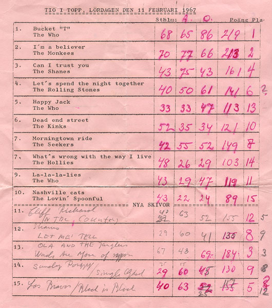
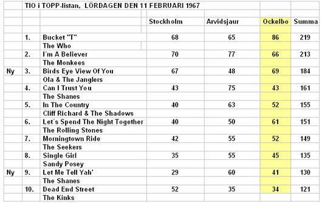
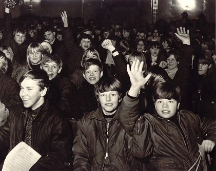

Tio i Topp, 11 februari 1967, sändning från Ockelbo
Tio i Topp var ett omtyckt radioprogram under åren 1961-1974. Programmet   
sändes direkt varje lördag kl 1500, (under sommaren som ”Sommartoppen”)
där totalt c:a 600 ungdomar röstade fram sina idoler med hjälp av en s.k.
mentometer.
Anledningen till att jag skriver om Tio i Topp 1967 är att jag har ett rullband
i min äga som Ulf Åkerlund spelade in åt mig den dagen.
Jag var engagerad i själva lokaluthyrningen och kunde inte höra programmet
men ville ha det dokumenterat.
Har nu letat fram en gammal rullbandspelare och, 40 år senare, hört
programmet igen, vilket inspirerade mig att skriva något om händelsen,
en stor händelse på den tiden i Ockelbo.
Via ”Sök och Finn” med Hasse Persson, Radio Gävleborg den 30 mars 2007
fick jag kontakt med några personer som var med och röstade fram sina
favoriter. Svante Stockselius var en bland de som var där och röstade och
som här, längre fram i texten, lämnar sin personliga berättelse från den dagen.
För att återgå till den stora dagen, dagen med stort L, Lördagen den 11
februari 1967 var det Ockelbos tur att vara med och rösta fram veckans
Tio i Topp-lista tillsammans med Stockholm och Arvidsjaur.
200 popfrälsta ungdomar hade haft turen att få tag på biljetter till denna
fantastiska händelse att få vara med och rösta fram en ny lista.
Tillsammans med de 200 mentometertryckare på Gotan fanns ytterligare c:a
100 ungdomar som satt på läktaren för att lyssna och vara med om själva
dramatiken vid finalomröstningen och som sändes direkt i radions program 3
klockan 15.00.
Dom 200 ungdomarna fick först rösta fram fem utmanare från
30 låtar som i sin tur hade presenterats i programmet 30 i test tidigare
i veckan. Dom fem utmanarna fick sen tävla mot föregående veckas
Tio i Topp-lista.
Det var stor spänning när radions ”spökröst”, Carl-Eiwar (Carlsson),
presenterade röstningens utfall, som för övrigt aldrig hördes i själva lokalen
utan endast i radion.
Ett stort glädjetjut utbröt då beskedet kom att förra veckans nummer ett
”Bucket T” med The Who behöll tätplatsen.
Det var just den låten som fick flest röster från Ockelbo, hela 86 st.
Medlemmarna i veckans vinnargrupp, The Who, var Roger Daltrey – sång,
Pete Townshend – gitarr, John Entwistle – bas och Keith Moon - trummar.
The Who hette under sin första tid som grupp The Detours och spelade då
rhythm and bluesorienterat material. En av medlemmarna i gruppen var då Roger Daltrey. John Entwistle gick med i gruppen år 1962 och Pete Townshend
kom också med samma år. 1963 kom Keith Moon med på trummar och den
”klassiska” uppsättningen har nu bildats.
År 1964 bytte gruppen namn till The Who.
1965 blev låten ”I Can´t Explain ” en stor hit i England men det riktigt stora
genombrottet kom med låtarna ”Anyway, Anyhow, Anywhere”, ”Twist And
Shout”, ”The Kids Are Alright” och ”My Generation” senare under detta år.
Gruppens debutalbum, My Generation, släpptes även år 1965.
Svante Stockselius berättar:
Ryktet spred sig på rasten. Men kunde det verkligen vara sant?
Skulle Tio i Topp, mitt stora, stora favoritprogram i radio komma till Ockelbo?
Lördag efter lördag satt jag som klistrad framför transistorn. Lyssnade till den
knattrande mentometersignalen, hörde Carl-Eiwars spökröst och naturligtvis
höll stenkoll på alla de hetaste låtarna.
Säkert svårt att idag förstå programmets enorma popularitet. Den berodde nog
mest på att det var så ensamt i sitt slag. Det fanns ju inga reklamkanaler, de
speciella ungdomsprogrammen i radio var foträta och politiserade. Det här var
på den tiden då populära hits från England var suspekta och Sveriges Radio
ville att den lyssnande ungdomen skulle ägna sig åt "Träd, Gräs & Stenar" och
"Nynningen".
Vid sidan av tisdagarnas "Kvällstoppen" var Tio i Topp en oas för
oss som gillade The Monkees, Stones, Hep Stars och The Shanes.
Nu skulle alltså denna institution komma till mitt Ockelbo. Återstod bara en sak
- ordna en biljett. Fröken Hjördis Persson informerade oss på fredagen att
några biljetter hade reserverats för oss i Klass 5. Minns inte hur många, men
tror att det bara rörde sig om fem.
Fröken Persson berättade att i sann demokratisk anda skulle det hela avgöras
med lottdragning under dagens sista lektion. Den som var intresserad skulle
skriva sitt namn på en lapp och så skulle de fem lyckliga dras.
Men man ska ju aldrig lita på politiker eller slumpen. Så här gällde det att tänka
till. Jag inledde en charmoffensiv hos mina klasskamrater och upptäckte snart
att sju-åtta av dem inte alls delade min brinnande passion för Tio i Topp och
nog tänkt sig att göra nåt helt annat denna lördagseftermiddag i februari 1967.
Men ganska lite övertalning - en påse godis kan ha varit inblandad - fick jag
dessa sju-åtta att skriva sina namn på lappar och i händelse av att deras namn
skulle dras skulle de lämna sin biljett till - ja, just det... Smart upplagt, tyckte
jag.
Så kom dagens sista lektion. Jag minns det som igår. Stämningen var ganska
nervös men ändå uppsluppen. Fröken Persson blandade lapparna i en av de blå
papperskorgarna och drog upp den första lappen. Fan, inte jag. Och inte heller
någon av mina kumpaner.
Nästa lapp. Jubel i ena hörnet. Ett nytt namn som inte ingick i den edsvurna
kretsen. Nåväl, tre lappar kvar att dra. "Nu tar vi nästa" sa Hjördis och läste
efter lite effektfull väntan upp lappens namn: Hillevi Hedlund. Och jag visste
att hon minsann absolut ville gå.
Nu började paniken bli påtaglig. Här skulle mitt favoritprogram komma inpå
knuten. Och jag, jag som visste mest om varenda låt och gjorde egna listor
med analyser efter varenda program, jag skulle få stå utanför Gotans stängda
dörrar och inte få komma in i Paradiset. Ett tungt öde för en 11-årig pop-nörd.
Fjärde lappen. Yes, yes, namnet på en av mina förtrogna lästes upp. Jag
blinkade förtroendefullt och knöt handen i dold segergest. Och så sista lappen.
"Den går till Svante" sa Hjördis och just då var hon den ljuvligaste människa
som fanns.
Paradiset portar stod öppna. Den slitna trappan på Gotan skulle tas i ett enda
jubelsprång. Och det gällde att vara på plats i tid. Jag tror jag och Pelle
Berglund från sexan var där tre timmar i förväg. Men det lönade sig, vi hamnade
längst fram, fick mentometerknappar och en av låtarna jag röstade på, The
Who med "Bucket T" vann också.
Och alltsammans var sant.
Redaktör Skogh var ju där från Gefle Dagblad och förevigade den unika
händelsen. Och där, till höger, där sitter jag bland mina lyckokamrater med
mentometerknappen i högsta hugg.
Och det var den mest underbara dagen i den 11-åriga pojkens liv.
SVANTE STOCKSELIUS
Tio i Toppare
Hans Pålsson, Sandviken, också en sann Tio i Topp diggare,
berättar att The Who spelade i Högbo, Sandviken, ett drygt
halvår tidigare, närmare bestämt den 4 juni 1966, där även
svenska gruppen The Hounds spelade.
The Who kommer till Sverige och Globen den 6 juli 2007.
Vill du se dem igen? Boka din biljett här!
Kjell Söderström
Lyssna på programmet här!
(Mp3 format, ca 16 MB)
(Musiken är p.g.a. upphovsrättsliga
regler bortklippt)